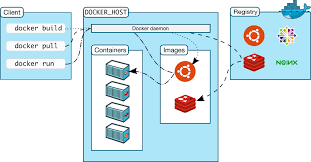
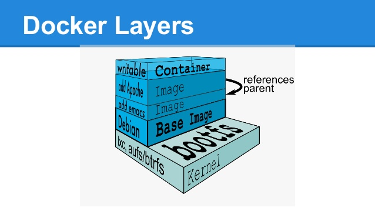
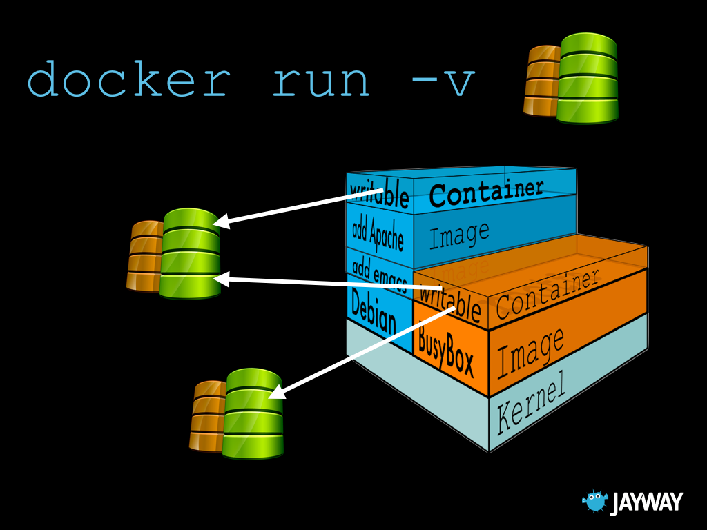
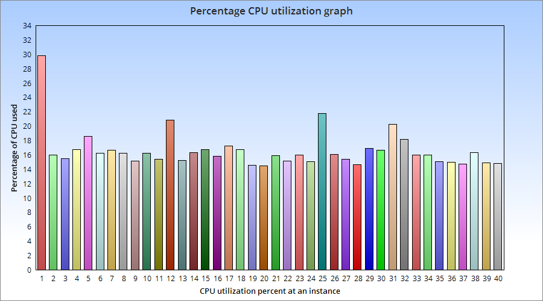
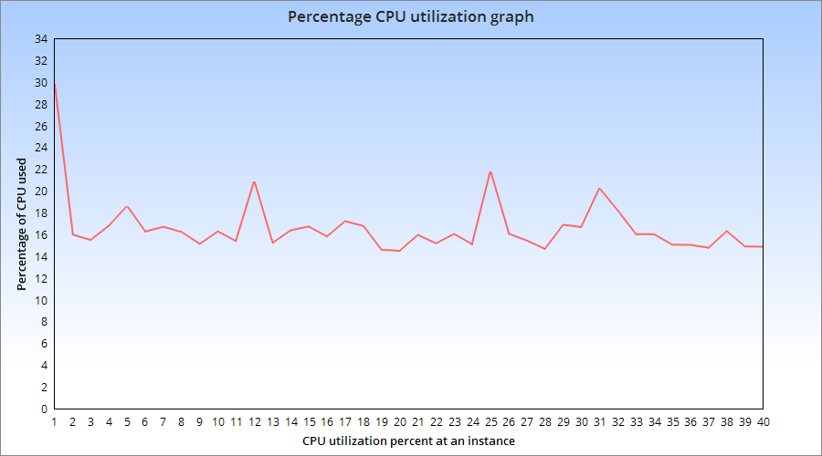
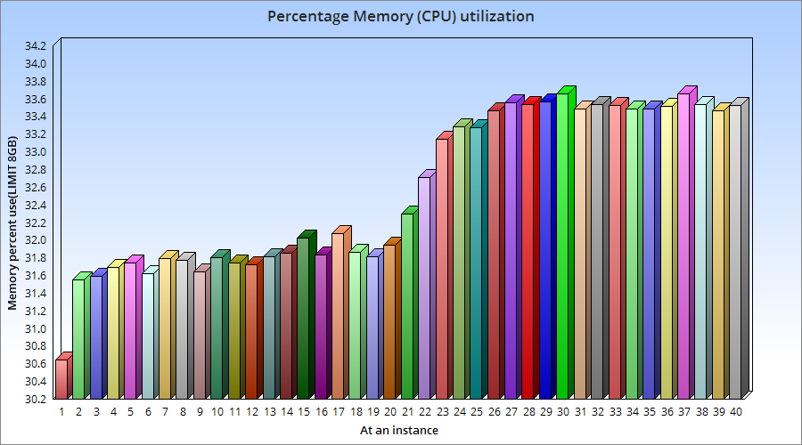
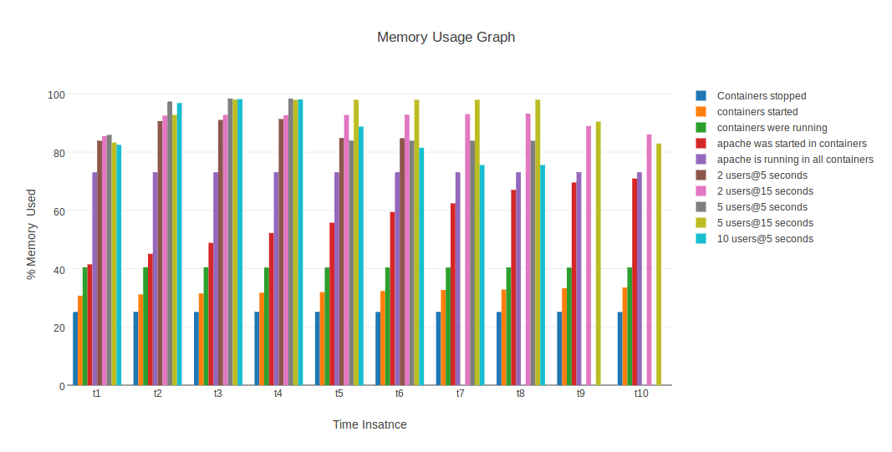
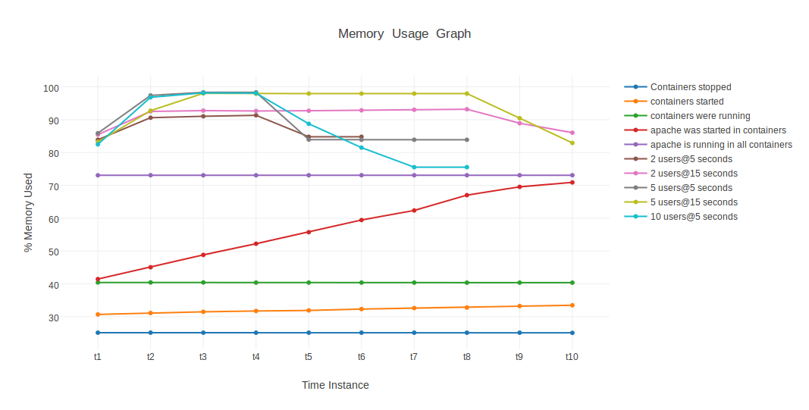
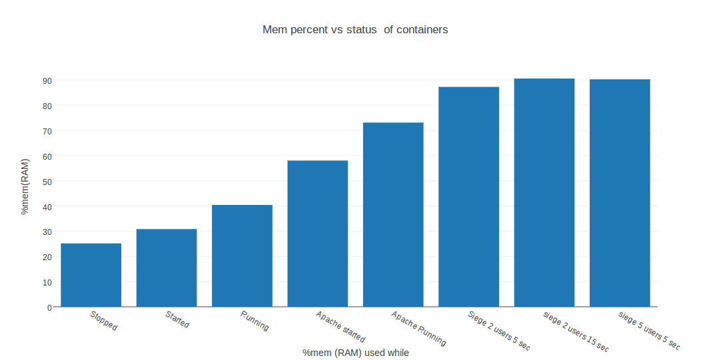

Docker 1.11.2
Table of Contents
- 1. Introduction
- 2. Motivation
- 3. Introduction to Docker
- 4. Benefits of Docker
- 5. Docker Architecture
- 6. Getting started with Docker
- 6.1. Docker images and containers
- 6.2. How to Install docker on Ubuntu 14.04
- 6.3. Launch your first container
- 6.4. Create/Start/Stop/Restart/Destroy your container
- 6.5. Naming a container
- 6.6. Giving a hostname to container
- 6.7. List containers
- 6.8. List images
- 6.9. List processes running inside a container
- 6.10. Running your container in detached mode
- 6.11. Execute a command inside a container from host machine
- 6.12. Get inside a container
- 6.13. Auto restart Containers
- 6.14. Resource allocation options for Docker containers
- 7. Advanced operations in Docker
- 8. Docker Hub
- 9. Performance Testing
- 10. Conclusion
- 11. Reference
1 Introduction
This document aims at detailing the Docker with everything tested and confirmed.
2 Motivation
To get indepth knowledge of Docker along with all its features so that we can shift VLEAD's current architecture of hosting labs in Virtual Machines to Docker Containers
3 Introduction to Docker
Docker is an open-source technology that that allows you to build, run, test, and deploy distributed applications inside software containers. It allows you to package a piece of software in a standardized unit for software development, containing everything the software needs to run: code, runtime, system tools, system libraries, etc. Docker enables you to quickly, reliably, and consistently deploy applications regardless of environment. You can refer it here.
4 Benefits of Docker
- Rapid application deployment
- Containers include the minimal runtime requirements of the application, reducing their size and allowing them to be deployed quickly.
- Portability across machines
- An application and all its dependencies can be bundled into a single container that is independent from the host version of Linux kernel, platform distribution, or deployment model. This container can be transferred to another machine that runs Docker, and executed there without compatibility issues.
- Version control
- You can track successive versions of a container, inspect differences, or roll-back to previous versions. That means your container can be easily rolled back when required.
- Sharing
- You can use a remote repository to share your container with others.
- Lightweight and minimal overhead
- Docker images are typically very small, which facilitates rapid delivery and reduces the time to deploy new application containers.
- Simplified maintenance
- Docker reduces effort and risk of problems with application dependencies.
5 Docker Architecture
- Docker uses a client-server architecture
The Docker client talks to the Docker daemon, which does the heavy lifting of building, running, and distributing your Docker containers

6 Getting started with Docker
6.1 Docker images and containers
- Docker Image
- A Docker image is a read-only template.
- For example, an image could contain an Ubuntu operating system with Apache and your web application installed.
- Images are used to create Docker containers.
- Docker images are the build component of Docker.
- Docker Container
- A container is a runtime instance of a docker image.
- Each container is launched from a Docker image.
- Docker containers can be run, started, stopped, moved, and deleted.
- Docker containers are the run component of Docker.
- To use a programming metaphor, if an image is a class, then acontainer is an instance of a class(a runtime object).
6.1.1 How does Docker images work?
- Each image consists of a series of layers.
- Docker makes use of union file systems to combine these layers into a single image.One of the reasons Docker is so lightweight is because of these layers.
- When you change a Docker image-for example, update an application to a new version, a new layer gets built.
- Thus, rather than replacing the whole image or entirely rebuilding, only that layer is added or updated.
- Now you don't need to distribute a whole new image, just the update, making distributing Docker images faster and simpler.
6.1.2 How does Docker containers work?
- A container consists of an operating system, user-added files and meta-data.
- The image which we used to create the container tells Docker what that container holds, what process to run when the container is launched, and a variety of other configuration data.
- The Docker image is read-only. When Docker runs a container from an image, it adds a read-write layer on top of the image in which your application can then run.

6.2 How to Install docker on Ubuntu 14.04
Installation Instructions on Ubuntu:
- Update your droplet
$ sudo apt-get update $ sudo apt-get -y upgrade
- Make sure aufs support is available
$ sudo apt-get install linux-image-extra-`uname -r`
- Add docker repository key to apt-key for package verification
$ sudo apt-key adv --keyserver hkp://pgp.mit.edu:80 --recv-keys 58118E89F3A912897C070ADBF76221572C52609D
- Add the docker repository to Apt sources
$ echo "deb https://apt.dockerproject.org/repo ubuntu-trusty main" | sudo tee /etc/apt/sources.list.d/docker.list
- Update the repository with the new addition
$ sudo apt-get update
- Finally, download and install docker
$ sudo apt-get install docker-engine
- Check if docker is installed
$ docker version
If you get the following output, then Docker is successfully installed
Client: Version: 1.11.2 API version: 1.23 Go version: go1.5.4 Git commit: b9f10c9 Built: Wed Jun 1 21:47:50 2016 OS/Arch: linux/amd64 Server: Version: 1.11.2 API version: 1.23 Go version: go1.5.4 Git commit: b9f10c9 Built: Wed Jun 1 21:47:50 2016 OS/Arch: linux/amd64
6.3 Launch your first container
Launch or execute a command in container using docker run command. This
command will launch a container from an image, execute your command
display output on terminal, stop container and exit out.
docker run-->create container->run-container-->execute command-->show output-->exit from container-->stop container
$ sudo docker run [options] [image] [command] [args]
For Example:
$ sudo docker run ubuntu:14.04 echo "Hello Docker" $ Hello Docker
If the ubuntu:14.04 image is not present locally it will download it, will
create a container and then will execute the command echo. After this it
will exit the container and the container is stopped.
6.4 Create/Start/Stop/Restart/Destroy your container
A container is a runtime instance of a docker image.
- Create a new container
$ docker create [OPTIONS] IMAGE [COMMAND] [ARG...]
For example:
$ docker create -it ubuntu:14.04 echo "Hello World"
docker createcommand can be used to set up a container configuration ahead of time so that it is ready to start when you need it.- Creates a writeable container layer over the specified image.
- A container created does not start on it's own and is to be started.
- Start a container
$ docker start [OPTIONS] CONTAINER [CONTAINER...]
For Example:
$ docker start e76ccff0a41a e76ccff0a41a
- To stop one or more containers
$ docker stop [OPTIONS] CONTAINER [CONTAINER...]
For Example:
$ docker stop e76ccff0a41a e76ccff0a41a
- To restart one or more container
$ docker restart [OPTIONS] CONTAINER [CONTAINER...]
For Example:
$ docker restart e76ccff0a41a e76ccff0a41a
- Destroy a container
$ docker rm [OPTIONS] CONTAINER [CONTAINER...]
- You can destroy one or more containers at a time
- You cannot delete a container which is currently running. So first stop the container and then delete it.
$ docker stop e76ccff0a41a e76ccff0a41a $ docker rm e76ccff0a41a e76ccff0a41a
6.5 Naming a container
- If you do not specify the name of the container docker will automatically assume any random name.
To give name to a container:
$ docker run [options] -name <name of container> <image> <command>
For Example:
$ docker run -it -name lab1_cse01 ubuntu:14.04 bash root@8c2fc6ba883b:~#
You can always rename your container
$ docker rename [OPTIONS] OLD_NAME NEW_NAME
For Example:
$ docker rename lab1_cae01 lab2_cse02
6.6 Giving a hostname to container
To give host name to container you must use
-hflag with thedocker runcommand:$ docker run -h <hostname> [options] [image] [command]
For Example:
$ docker run -h new_ctnd -it ubuntu:14.04 bash root@new_cntd:~#
6.7 List containers
docker ps command is used to list containers in host machine. Depending on
the flags provided, it displays information of stopped or running containers.
$ docker ps [options]
- List the containers which are currently running
$ docker ps CONTAINER ID IMAGE COMMAND CREATED STATUS PORTS NAMES 07c5614d5a40 ubuntu:14.04 "bash" About a minute ago Up About a minute evil_fermi e76ccff0a41a ubuntu:14.04 "bash" 4 days ago Up 12 minutes stoic_bhabha
- List all the containers(both running and stopped)
$ docker ps -a CONTAINER ID IMAGE COMMAND CREATED STATUS PORTS NAMES 07c5614d5a40 ubuntu:14.04 "bash" 5 minutes ago Up 5 minutes evil_fermi e76ccff0a41a ubuntu:14.04 "bash" 4 days ago Up 15 minutes stoic_bhabha ca251b8c44d8 ubuntu:14.04 "bash" 4 days ago Exited (0) 4 days ago sad_wright 58d28030aa5e ubuntu:14.04 "bash" 4 days ago Exited (0) 4 days ago jolly_raman 34ab6efd089f lab/problem-solving:01 "bash" 5 days ago Exited (0) 4 days ago insane_yalow 4164528c53c3 ubuntu:14.04 "bash" 5 days ago Exited (0) 4 days ago pensive_hypatia ec164228902a ubuntu:14.04 "bash" 5 days ago Exited (0) 21 hours ago tiny_aryabhata 8c2fc6ba883b ubuntu:14.04 "bash" 5 days ago Exited (0) 30 hours ago new-name
OR
$ docker ps -as CONTAINER ID IMAGE COMMAND CREATED STATUS PORTS NAMES SIZE 07c5614d5a40 ubuntu:14.04 "bash" 6 minutes ago Up 6 minutes evil_fermi 0 B (virtual 188 MB) e76ccff0a41a ubuntu:14.04 "bash" 4 days ago Up 17 minutes stoic_bhabha 164 B (virtual 188 MB) ca251b8c44d8 ubuntu:14.04 "bash" 4 days ago Exited (0) 4 days ago sad_wright 203.8 kB (virtual 188.2 MB) 58d28030aa5e ubuntu:14.04 "bash" 4 days ago Exited (0) 4 days ago jolly_raman 63.87 MB (virtual 251.8 MB) 34ab6efd089f lab/problem-solving:01 "bash" 5 days ago Exited (0) 4 days ago insane_yalow 1.385 MB (virtual 788.7 MB) 4164528c53c3 ubuntu:14.04 "bash" 5 days ago Exited (0) 4 days ago pensive_hypatia 153.1 MB (virtual 341.1 MB) ec164228902a ubuntu:14.04 "bash" 5 days ago Exited (0) 21 hours ago tiny_aryabhata 1.25 GB (virtual 1.438 GB) 8c2fc6ba883b ubuntu:14.04 "bash" 5 days ago Exited (0) 30 hours ago new-name 0 B (virtual 188 MB)
- flag
ato view all containers - flag
sto view size of containers
- flag
6.8 List images
List all the images currently sitting in your local repository/system
$ docker images REPOSITORY TAG IMAGE ID CREATED SIZE labs/speech-recog latest 1e85be4efa89 5 days ago 341.1 MB lab/problem-solving 01 be7d953b67e6 5 days ago 787.3 MB meghanab/myapp 1.0 08570d8b4a10 13 days ago 267.3 MB meghana/new_image1 0.1 2934249749c9 2 weeks ago 252.9 MB meghana/new_user 1 b5900443b2d7 2 weeks ago 188.3 MB centos 7 904d6c400333 3 weeks ago 196.8 MB ubuntu 14.04 8f1bd21bd25c 4 weeks ago 188 MB
6.9 List processes running inside a container
- Display the running processes of a container
$ docker top [container]
For Example:
$ docker top ec164228902a UID PID PPID C STIME TTY TIME CMD root 5207 5192 0 20:32 pts/9 00:00:00 bash
6.10 Running your container in detached mode
To run a container in the background as soon as it is created you have to specify
-dflag along with thedocker runcommand$ docker run -d [image] [command]
- This will run the command in the background and will automatically shuts down the container after its execution
For Example:
$ docker run -d ubuntu:14.04 bash 698de53f5f4b151122e18b51d4abb813b4e1dff10e30472791dd5ec336fb4b10 $
6.11 Execute a command inside a container from host machine
You can execute a command inside a container from the host machine provided the container is in running state. Otherwise you have to start the container first and then use the following command
$ docker exec [OPTIONS] CONTAINER COMMAND [ARG...]
For example:
root@meghana / $ docker ps CONTAINER ID IMAGE COMMAND CREATED STATUS PORTS NAMES e76ccff0a41a ubuntu:14.04 "bash" 2 days ago Up About an hour stoic_bhabha root@meghana / $ docker exec e76ccff0a41a ping 127.0.0.1 -c 5 PING 127.0.0.1 (127.0.0.1) 56(84) bytes of data. 64 bytes from 127.0.0.1: icmp_seq=1 ttl=64 time=0.050 ms 64 bytes from 127.0.0.1: icmp_seq=2 ttl=64 time=0.053 ms 64 bytes from 127.0.0.1: icmp_seq=3 ttl=64 time=0.055 ms 64 bytes from 127.0.0.1: icmp_seq=4 ttl=64 time=0.033 ms 64 bytes from 127.0.0.1: icmp_seq=5 ttl=64 time=0.054 ms --- 127.0.0.1 ping statistics --- 5 packets transmitted, 5 received, 0% packet loss, time 3997ms rtt min/avg/max/mdev = 0.033/0.049/0.055/0.008 ms
- You can use various flags with this command
-d Detached mode: run command in the background -i Keep STDIN open even if not attached -t Allocate a pseudo Terminal
6.12 Get inside a container
To get terminal access to container you need to fire some commands. This may be required to install packages and configure them inside your container.
- Case 1
If you want to enter into a container as soon as you create it:
$ docker run -it <repository>:<tag> bash
-iflag to connect STDIN on the container-tflag to get a pseudo terminal
For Example:
$ docker run -it ubuntua:14.04 bash root@ec164228902a:~#
- Case 2
- If you fire
bashcommand inside a container, it runs forever, until manually stopped. By giving-dflag todocker runa container executes and runs in detached mode, with no interaction with user. So to get inside a container which is running in detached mode:- Method 1
- Using exec command
$ docker exec -it <Container ID> bash
For Example:
$ docker exec -it ec164228902a bash root@ec164228902a:~#
- To come out of the container without stopping it
CTRL+P CTRL+Q
OR
# exit
For example you are inside the container
ec164228902a:root@ec164228902a:~# exit root@meghana ~ $ root@meghana ~ $ docker ps CONTAINER ID IMAGE COMMAND CREATED STATUS PORTS NAMES 07c5614d5a40 ubuntu:14.04 "bash" 21 minutes ago Up 21 minutes evil_fermi ec164228902a ubuntu:14.04 "bash" 4 days ago Up 32 minutes stoic_bhabha
- Method 2
- Using Attach command
$ docker attach <Container ID>
- You might need to hit Enter to bring up the prompt.
For Example:
$ docker attach ec164228902 $ root@ec164228902:~#
- To come out of the container without stopping it
CTRL+P+Q
6.13 Auto restart Containers
If your host machine shuts down, all container will be stopped. Once your
restart your machine, all container should automatically start. To add such
behavior to all your containers, you need to add a flag --restart in
docker run command.
$ docker run [options] --restart=always [image] [command]
For Example:
$ docker run -d -it --restart=always meghanab/app1:0.1 bash
- We need to specify whether you want to auto-start your container at the time of its creation itself.
6.14 Resource allocation options for Docker containers
Using the
-mflag withdocker runcommand we can limit the memory(RAM) usage of the containers$ docker run -m [] [options] [image] [command]
For Example:
$ docker run -d -it -m 300M ubuntu:14.04 bash WARNING: Your kernel does not support swap limit capabilities, memory limited without swap. b172827cb899f36e35e0fa587e6f30793f0ed37befe76a1e77b2f9cacc8c905a $ docker stats --no-stream=true CONTAINER CPU % MEM USAGE / LIMIT MEM % NET I/O BLOCK I/O PIDS b172827cb899 0.00% 712.7 kB / =314.6 MB= 0.23% 4.064 kB / 648 B 114.7 kB / 0 B 0 ec164228902a 0.00% 4.375 MB / 4.064 GB 0.11% 12.37 kB / 648 B 4.071 MB / 0 B 0
- Thus here we are able to limit the RAM to 300MB
- While for the other container it is 4GB as we didn't mention anything during its creation, so it takes 4GB(host system RAM) by default.
- Here the
-dflag lets the container run in detached mode
7 Advanced operations in Docker
7.1 Create an image from your container
One can commit a container and can create its image. Thus we can save the state a container. This image can be used to launch new container with all the packages installed hence replicating the state of the container. This helps in creating a reusable image for launching multiple containers with customized applications of your need.
$ docker commit <container ID> <Repository>:<tag> #For Example: $ docker commit ec164228902 meghanab/myapp:1.0 sha256:4069d3511b08f810c6b725f64360f10148a46a8e5f66a111304585e33af1e912
7.2 Dockerfile
Dockerfiles are scripts containing a successive series of instructions, directions, and commands which are to be executed to form a new docker image. Each command executed translates to a new layer forming the end product. They basically replace the process of doing everything manually and repeatedly. When a Dockerfile is finished executing, you end up
having formed an image, which then you use to start (i.e. create) a new
container.It is more effective and easier way compared to docker commit
- Writing Dockerfile
- Docker file instructions:
FROM: for specifying the base imageRUN: for specifying commands to execute
$ vim Dockerfile #Example of a Docker File FROM ubuntu:14.04 RUN apt-get install -y vim RUN apt-get insatll -y curl
OR
#Just another way of Docker File $ vim Dockefile FROM ubuntu:14.04 RUN apt-get update && apt-get install -y vim \ curl- The second method of dockerfile is more preferable as in first case for each run command an intermediate container gets created and destroyed where as in second method only one intermediate container will get created and destroyed
- Thus Second method is more preferable.
- Building a image from our Docker File
$ docker build -t [repository]:[tag] [path]
- Now you can use this image
[repository]:[tag]to create containers
For Example:
$ docker build -t meghanab/new_app:1.0 .
-tfor specifying the image tag.to specify the path of Dockerfile. In this case it is the current directory
- Now you can use this image
- Launching a container from our new image
$ docker run [options] [repository]:[tag] [command]
For Example:
$ docker run -it -d meghanab/new_app:1.0 bash root@e76ccff0a41a:~#
- Thus a new container will be created and started with vim and curl pre-installed. Similarly we can install other packages.
7.2.1 Some more info on Dockerfile
- CMD Instruction
- Defines a default command that will execute when the container is created/started whose base image is built using dockerfile
- Will not perform any action when the image is being created
- Can only be specified once in a dockerfile
Can be overriden at run time For Example:
FROM ubuntu:14.04 RUN apt-get update && apt-get install -y vim \ curl CMD ping 127.0.0.1 -c 10
- ENTRYPOINT instruction
- Defines the command that will run when the container is executed
Differnt from
CMDinstruction asENTRYPOINTinstruction will accept arguments at run timeENTRYPOINT ["executable", "param1", "param2"]
For Example:
FROM ubuntu:14.04 RUN apt-get update && apt-get install -y vim \ curl ENTRYPOINT ["ping"]- Only the last
ENTRYPOINTinstruction in the Dockerfile will have an effect. - The
ENTRYPOINTinstruction is given in exec form which will take parameters in json format as it has to accept args at run time CMDinstruction can also be given in exec formatYou can give only one command in the
ENTRYPOINTinstruction$ docker run <repository>:<tag> 127.0.0.1
- EXPOSE instruction
The
EXPOSEcommand is used to associate a specified port to enable networking between the running process inside the container and the outside world (i.e. the host). For Example:# Usage: EXPOSE [port] EXPOSE 8080EXPOSE
- ADD instruction
The
ADDinstruction copies new files, directories or remote file URLs from <src> and adds them to the filesystem of the container at the path <dest>.$ ADD <src>... <dest> OR $ ADD ["<src>",... "<dest>"] (this form is required for paths containing whitespace)
7.3 Run a container as a server
- We can run a container as long as you don't kill the process with PID 1
- If a process with PID 1 is killed inside a container then the container will automatically stop.
- In the
docker run [options] [image] [command], the command which you give will become the process with PID 1 - If we give "bash" as command then the container will not stop until we manually kill bash process in that container.
7.3.1 Steps to set up a container as a server
- Create and run a container
$ docker run [options] [image] [command]
- So let us give bash command
$ docker run -i -t ubuntu:14.04 bash
- This command will create a new container and will take us inside the container
- Now if you fire
ps -axyou can see the bash process with PID 1
PID TTY STAT TIME COMMAND 1 ? Ss+ 0:00 bash 51 ? R+ 0:00 ps -ax
- So now if you fire
exityou will kill the process bash and you will come out of the container and the container stops, which is not desired.
- If you want to come out of the container and keep it running in background,then fire
CTRL+P+Q
- (no term)
- If the host system is rebooted then this container is stopped. So to avoid
this we have to give
--restart=alwaysflag at the time of creating container. This is discussed above in the 'Auto restart containers' section.
7.4 To view the Docker containers resource usage statistics
$ docker stats --no-stream=true
For Example:
$ docker stats --no-stream=true CONTAINER CPU % MEM USAGE / LIMIT MEM % NET I/O BLOCK I/O PIDS 07c5614d5a40 0.00% 544.8 kB / 4.064 GB 0.01% 5.245 kB / 648 B 0 B / 0 B 0 e76ccff0a41a 0.00% 532.5 kB / 4.064 GB 0.01% 6.214 kB / 648 B 0 B / 0 B 0
7.5 Docker Data Volumes
- Data volumes are designed to persist data.
- These are independent of the container's life cycle i.e even though containers are deleted volumes persist.
- Volumes are initialized when a container is created.
- Data volumes can be shared and reused among containers.
- Changes to a data volume will not be included when you update an image.

7.5.1 Create Volume
To create a new volume
$ docker volume create [OPTIONS]
- You can create a volume and then configure the container to use it.
For Example:
$ docker volume create --name hello $ docker run -d -v hello:/world <image> <command>
- Here the mount is created inside the container's /world directory.
7.5.2 Mount Host Directory
To mount a directory from host to your container
$ docker run [options] -v /<host_dir>:/<container_dir> [image] [command]
For Example:
$ docker run -it -v /home/meghana/project:/test ubuntu:14.04 bash
- This command mounts the host directory, /home/meghana/project, into the container at /test
- All the files in /home/meghana/project can accessed from /test inside the container
7.5.3 Inspect
To get information about one or more volumes
$ docker volume inspect [OPTIONS] VOLUME [VOLUME...]
For example:
$ docker volume create --name volume_1
docker volume inspect volume_1 [ { "Name": "volume_1", "Driver": "local", "Mountpoint": "/var/lib/docker/volumes/volume_1/_data", "Labels": {} } ]
7.5.4 Delete Volume
To delete one or more volumes
$ docker volume rm [OPTIONS] VOLUME [VOLUME...]
For Example:
$ docker volume rm volume_1 volume_1
- You cannot remove a volume which is currently used by a container.
7.5.5 List Volumes
To list all the volumes present
$ docker volume ls [OPTIONS]
$ docker volume ls DRIVER VOLUME NAME local volume_1 local volume_2
7.5.6 Note:
- We cannot add or copy a file of memory more than the free memory available in a container
- We can check free memory inside a container as follows:
$ docker exec <container ID> df -h
$ docker exec ec164228902a df -h Filesystem Size Used Avail Use% Mounted on none 37G 28G 7.2G 80% / tmpfs 1.9G 0 1.9G 0% /dev tmpfs 1.9G 0 1.9G 0% /sys/fs/cgroup /dev/sda9 37G 28G 7.2G 80% /etc/hosts shm 64M 0 64M 0% /dev/shm
- According to this we cannot copy a file of more than 7.2G into the container.
- But you can access that file from your machine by using the 'Mount host directory' feature of Docker data volumes.
- Save the file in your some where in your host directory and mount that as mentioned in the above section(Mount Host Directory).
7.6 Taking backup of Docker Containers and images
7.6.1 Backup Docker Images
- Save the Docker Image
$ docker save -o <name_of_backup.tar> <image>
For Example:
$ docker save -o bkb_image1.tar image1
- This tar file will be stored in your current directory.
- Thus you can save your images and backup them.
- Load the backup image
$ docker load -i <name_of_backup.tar>
For Example:
$ docker load -i bkb_image1.tarx
- If you run
docker imagesyou can see your image
- If you run
7.6.2 Backup Docker Containers
- Export docker containers
$ docker export -o <backup_file_name.tar> <container ID>
For Example:
$ docker export -o bkb_cntd1.tar 07c5614d5a40
- Exports the contents of a container's filesystem as a tar archive.
- The
docker exportcommand does not export the contents of volumes associated with the container.
- Import docker containers
$ docker import <backup_file_name.tar>
For Example:
$ docker import bkb_cntd1.tar
- This command will create a new image and then using that image you have to create your container.
8 Docker Hub
8.1 what is a Docker hub?
The Docker Hub is a public registry maintained by Docker, Inc. It contains images you can download and use to build containers. It also provides authentication, work group structure, workflow tools like webhooks and build triggers, and privacy tools like private repositories for storing images you don't want to share publicly. You can refer here
8.2 How to use Docker hub?
8.2.1 Account creation and login
- create a Docker ID(You can do this through Docker Hub)
- Once you have a Docker ID, log into your account from the command line
$ docker login Login with your Docker ID to push and pull images from Docker Hub. If you don't have a Docker ID, head over to https://hub.docker.com to create one. Username: Password: Login Succeeded
- Once you have logged in from the command line, you can commit and push to interact with your repos on Docker Hub.
8.2.2 Search for images
You can search the Docker Hub registry via its search interface or by using the command line interface:
$ docker search [image]
For Example:
$ docker search ubuntu:14.04 NAME DESCRIPTION STARS OFFICIAL AUTOMATED chef/ubuntu-14.04 An Ubuntu 14.04 Docker Image with Chef Con... 19 saltstack/ubuntu-14.04-minimal 7 [OK] saltstack/ubuntu-14.04 5 [OK] brook/ubuntu-14.04.3-baidupcs https://github.com/GangZhuo/BaiduPCS ... 3 [OK] breezeight/test-kitchen-ubuntu-14.04 Ubunti 14.04 with chef omnibus installed 1 [OK] simphonyproject/ubuntu-14.04-remote Ubuntu 14.04 with Remote Access Support 1 [OK] fernandoacorreia/ubuntu-14.04-oracle-java-1.7 Docker image with Ubuntu 14.04 and Oracle ... 1 [OK] mostalive/ubuntu-14.04-oracle-jdk8 1 [OK] linuxmalaysia/docker-ubuntu-14.04-harden Docker Ubuntu harden for security with SSH... 1 [OK] visualjeff/ubuntu-14.04 0 [OK]
8.2.3 Pull images
Once you've found the image you want, you can download it with docker pull
$ docker pull [image]:[tag]
For Example:
$ docker pull ubuntu:14.04 14.04: Pulling from library/ubuntu 56eb14001ceb: Pulling fs layer 7ff49c327d83: Downloading [========================> ] 49.15 kB/101.4 kB 6e532f87f96d: Download complete 3ce63537e70c: Pulling fs layer
8.2.4 Push images
In order to push an image in your docker hub the name of the image should be same as that of the repository in your docker hub account.
$ docker push yourname/newimage:tag
For Example:
$ docker push meghanab/myapp:1.0
The image will then be uploaded and available for use by your team-mates and/or the community.You can also make the repository private. For more info refer this link
9 Performance Testing
- We tried to analyse the performance of Docker containers by giving load on 197 Docker containers(each container deployed with one lab) using the following methods:
9.1 Test using curl command and crontab
Curl is a tool to transfer data from or to a server, using one of the protocol HTTP, HTTPS out of many supported protocols. Using this feature of curl command, we tried generating load on containers. Here are the steps -
- Write a script to send 10000 curl request to a container
root@vlead-pc:~/load-scripts# vim load-test-script.sh
#!/bin/sh echo "START TEST : `date`" a=0 count=0 while [ $a -lt 10000 ] do curl http://$1 a=`expr $a + 1` count=`expr $count + 1` done- Write a script to generate crontab entries for executing load-testing script for all containers
root@vlead-pc:~/load-scripts# vim create-crontab.sh
#!/bin/sh a=2 ip="172.17.0." file=">/root/load-scripts/data" while [ $a -lt 200 ] do echo $1 $2 $ip$a $file$a a=`expr $a + 1` done- Copy paste the ouput of above script in crontab
$ crontab -e
- Write a script to check the
docker stats root@vlead-pc:~/load-scripts# cat get-stat.sh
#!/bin/sh a=0 while [ $a -lt 100 ] do echo "`docker stats --no-stream=true`" a=1 echo "" done- Write a script to analyse output of docker stats
#!/bin/sh cat $1 | awk '{print $2}' | sed 's/%//g' | sed '/CPU/d' | sed '/^$/d' > ouput.txt split -l 197 ouput.txt for i in `find x*` do echo "`awk '{ sum += $1 } END { print sum }' $i`" done- Following graphs were obtained
-   
9.2 Test using siege and sar commands
- Siege is an HTTP load testing and benchmarking utility that can be used to measure the performance of a web server when under duress. It evaluates the amount of data transferred, response time of the server, transaction rate, throughput, concurrency, and times the program returned okay
- sar command is used to collect, report, or save system activity information.
- Using the
siegecommand we tried to generate load on the containers.Following are the steps:
- Install sar,siege and configure them
- Use sar command to get the memory(RAM) usage statistics when the Containes are
- Stopped
- Started
- Containers were running
- Apache is started in containers
- Apache is running in containers
$ sar -r 5 10
- Redirect the output to a file in each case
- Write a script to generate siege commands
root@vlead-pc:~/load-scripts# vim generate-siege-file.sh
#!/bin/sh a=2 while [ $a -lt 200 ] do echo "siege -c $1 -t $2s http://172.17.0.$a &" echo 'echo "SEIGE CONTAINER $a"' a=`expr $a + 1` done
- Running this script will generate siege commands for all the containers
- Copy these siege commands to siege-test.sh
$ sh generate-siege-file.sh [no. of users] [Total time] > siege-test.sh
- (no term)
- Run
sar -r [time interval] [no of times]andsh siege-test.shparallely and redirect the output ofsarcommand to output file - (no term)
- Change the values of 'no of users' and 'total time' and repeat above for
each set of values and redirect the output of
sarcommand to output file - (no term)
Take the values of 'Time' and '%mem used' from output file and depict graphs. You can view the data here
The following graphs were obtained:   
9.3 Test using Fork bomb
A fork bomb is a denial-of-service attack wherein a process continually replicates itself to deplete available system resources, slowing down or crashing the system due to resource starvation.
:(){ :|: & };:This is fork bomb.- Due to this command you will run out of system resources and you may need to reboot your system.
- Here we tried to run fork bomb in one of the containers
9.3.1 Testing Docker Container without limiting its memory
- Create and run a container
$ docker run -it ubuntu:14.04 bash root@ec164228902a:~# =:(){ :|: & };:- This container now will ask for more system resources from host until you run of system resources.
- (no term)
- Since we ran out of resources, the host machine goes down and need to be rebooted
- (no term)
- Thus we found out that the Docker container asks for system resources from host when ever required without any limit. Due to this if the container goes down it will crash the host.
- (no term)
- So we have to limit the memory usage of the container.
9.3.2 Testing Docker container after limiting its memory
Create and run a container(include memory limit)
$ docker run -it -m=200M ubuntu:14.04 root@ae164798902a:~# =:(){ :|: & };- This container will use memory of 200 MB only. If it asks for more than 200 MB then the container stop.
- To start the container again you have to use
docker startcommand and the container will start normally. - Thus by limiting memory of a container, if any container crashes the others will be still running normally
10 Conclusion
With our understanding on docker, there are more features of our interest and limitations are rare. Docker looks a good option to containerize current VM based architecture, reducing the cost to half and stabilizing it with increased scalability.
11 Reference
- Docker Tutorials - https://training.docker.com/self-paced-training
- Benefits of Docker - https://access.redhat.com/documentation/en-US/Red_Hat_Enterprise_Linux/7/html/7.0_Release_Notes/sect-Red_Hat_Enterprise_Linux-7.0_Release_Notes-Linux_Containers_with_Docker_Format-Advantages_of_Using_Docker.html
- Docker Architecture - https://docs.docker.com/v1.8/introduction/understanding-docker/
- Install Docker - https://www.digitalocean.com/community/tutorials/how-to-install-and-use-docker-getting-started
- Docker glossary - https://docs.docker.com/engine/reference/glossary/#union-file-system
- Docker Commands - https://docs.docker.com/engine/reference/commandline/
- Docker file reference - https://docs.docker.com/engine/reference/builder/
- Docker Data Volumes - https://docs.docker.com/engine/tutorials/dockervolumes/
- Fork bomb - http://askubuntu.com/questions/159491/why-did-the-command-make-my-system-lag-so-badly-i-had-to-reboot
- Crontab - http://www.adminschoice.com/crontab-quick-reference
- curl command - https://curl.haxx.se/docs/manpage.html
- Load testing with siege - https://www.linode.com/docs/tools-reference/tools/load-testing-with-siege
- Docker forum group - https://groups.google.com/forum/#!forum/docker-user
- Docker community forums - https://forums.docker.com/